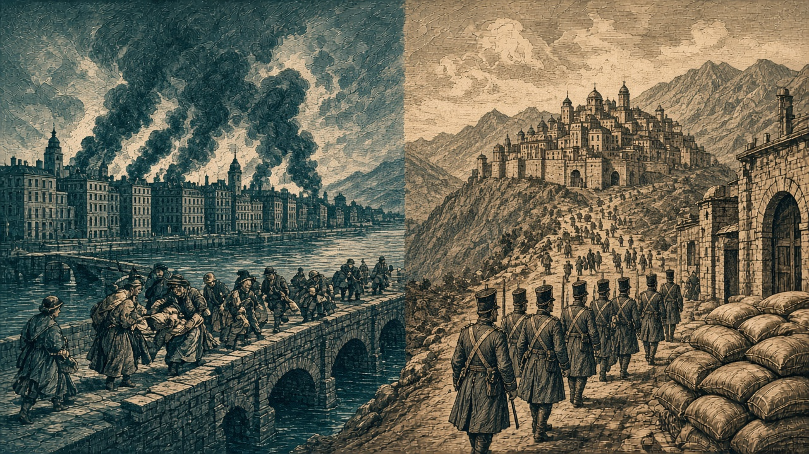

大都市ヴァルセナ陥落、紅泉では1万9,000人死亡
帝国と黒潮は再び首都を移す
泰平天国が食糧5万トンを徴発 オラニウムのミサイルは朱川の現代都市を直撃

【総合部】第147期、セントラ大陸東部では泰平天国がアルガリスト帝国の大都市ヴァルセナ（48,40）を占領して食糧50,000トンを徴発し、ノルステア大陸北部ではオラニウム連邦のミサイルが朱川共和国の現代都市紅泉（67,8）に命中して一般市民19,000人が死亡した。主要都市の喪失と大量の市民犠牲が同じ期に重なった。
アルガリスト帝国は前期に失った（49,39）から南西の港脇の町（47,42）へ首都を移し、新たな都の名もアルガリストとした。泰平軍は西の兵站基地（45,42）も占領して予備兵1,000人が投降し、北東の炭坑（50,39）も泰平領となった。さらに胡椒帝国が東の山（51,40）を占領し、帝国の領地は22から18区画へ縮んだ。詳報は2面。
朱川では、第144期に誕生したばかりの現代都市紅泉がミサイル1発で人口20,000人から1,000人へ激減した。首都丹城（68,10）でも防衛にあたった歩兵部隊がオラニウム装甲兵の突撃を受けて全滅したが、首都そのものは朱川領にとどまった。3度のミサイル攻撃による朱川市民の犠牲は計42,500人に達し、朱川共和国には災難賞が贈られた。詳報は3面。
黒潮は西岸へ遷都、黄砂は二国へ停戦打診
アカピ大陸北部では、前期に首都を奪われた黒潮自治国が西岸の村（12,14）へ首都を移し、名を引き続きアルヴェナとした。東の黄砂同盟は交戦中のオリョルッル王国と青海共和国の双方へ停戦の意思を打診し、泰平天国と翠湖自治州は友好国となった。詳報は2・3面。
朱川から白波へ5万3,900人が移住
ミサイルと地上戦が続く朱川共和国から、仕事を求める53,900人が白波王国へ海を渡った。一方、6か国14か所の都市と町で火災が起き、計65,000人が死亡。青海の大工場と藍岬の工場も焼失した。詳報は4面。